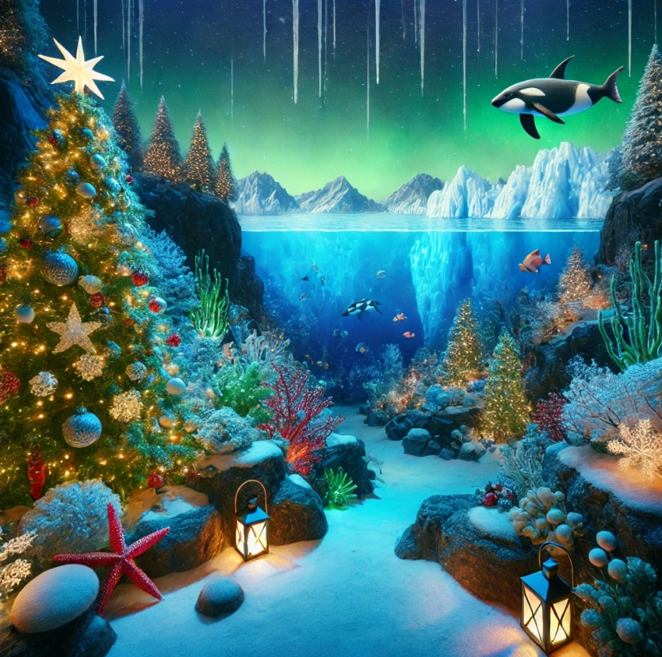

Les Fruits de Mer de Noël
Au plus profond de l'océan glacé, une merveilleuse aventure de Noël se prépare. Les habitants des fonds marins découvrent que le grand sapin de corail, traditionnellement décoré pour les fêtes, a perdu toutes ses décorations à cause d'un courant particulièrement turbulent. Une équipe improbable de créatures marines décide alors de s'unir pour sauver la magie de Noël sous-marine. Le groupe se lance dans une quête extraordinaire à travers différents environnements marins : les grottes lumineuses des anémones, les forêts d'algues scintillantes, les récifs colorés et même les mystérieuses fosses abyssales. Chaque membre de l'équipe apporte ses talents uniques : l'agilité pour se faufiler dans les espaces étroits, la sagesse pour résoudre les énigmes des anciens habitants des mers, la force pour déplacer les obstacles, et l'intelligence pour élaborer des stratégies. À chaque niveau, ils doivent collecter des décorations marines magiques : des perles brillantes, des étoiles de mer dorées, des coquillages lumineux et des algues scintillantes. Mais ils devront aussi faire face à des défis comme éviter les courants glacés, déjouer les pièges des grottes sombres et collaborer pour résoudre des puzzles marins complexes. Le tout en respectant le temps limité avant le réveillon de Noël sous-marin ! C'est une histoire qui célèbre l'amitié, la persévérance et la magie des fêtes, même dans les profondeurs de l'océan. Une aventure où la collaboration et l'entraide sont les clés pour réussir à ramener l'esprit de Noël dans leur monde aquatique.
L'Histoire
Dans les profondeurs chatoyantes de l'océan arctique, où les cristaux de glace dansent avec les rayons de lumière filtrés par la banquise, une communauté unique s'affaire aux préparatifs des fêtes. Les habitants des fonds marins vivent paisiblement dans leur village de corail, décoré de lumières bioluminescentes et d'algues scintillantes. Mais cette année, un événement inattendu vient perturber les festivités : le Grand Courant Glacial, plus puissant que d'habitude, a emporté tous les cadeaux et décorations soigneusement préparés par les habitants. Sans ces trésors, la magie de Noël risque de disparaître des profondeurs marines. Une équipe de joyeux amis, aux talents aussi variés que complémentaires, décide alors de braver les eaux glacées pour retrouver les précieux objets. Cette bande attachante compte parmi elle un sage conseiller toujours prêt à partager ses connaissances des courants marins, une stratège aux multiples bras capable de résoudre les situations les plus complexes, une petite acrobate rose pleine d'enthousiasme, et un courageux pinçeur rouge qui dirige les opérations avec détermination. Leur quête les mènera à travers cinq mondes sous-marins extraordinaires , À chaque niveau, ils devront collaborer pour surmonter des obstacles, résoudre des énigmes glacées, et éviter les dangers des profondeurs tout en collectant les décorations perdues. Le temps presse : ils n'ont que jusqu'au réveillon pour accomplir leur mission et sauver l'esprit de Noël dans leur monde aquatique ! Une aventure magique qui célèbre l'amitié, le courage et la persévérance, où chaque habitant des mers apprend que le véritable esprit des fêtes réside dans l'entraide et le partage, même dans les eaux les plus froides de l'océan.
Les Personnages
Bernard le Crabe
Le héros de notre histoire, toujours prêt à aider ses amis.
Clara la Crevette
Une amie fidèle qui apporte de la joie et de l'enthousiasme.
Oscar le Poisson
Le sage du groupe, toujours plein de conseils utiles.
Lola la Pieuvre
Une experte en stratégie, toujours prête à relever des défis.